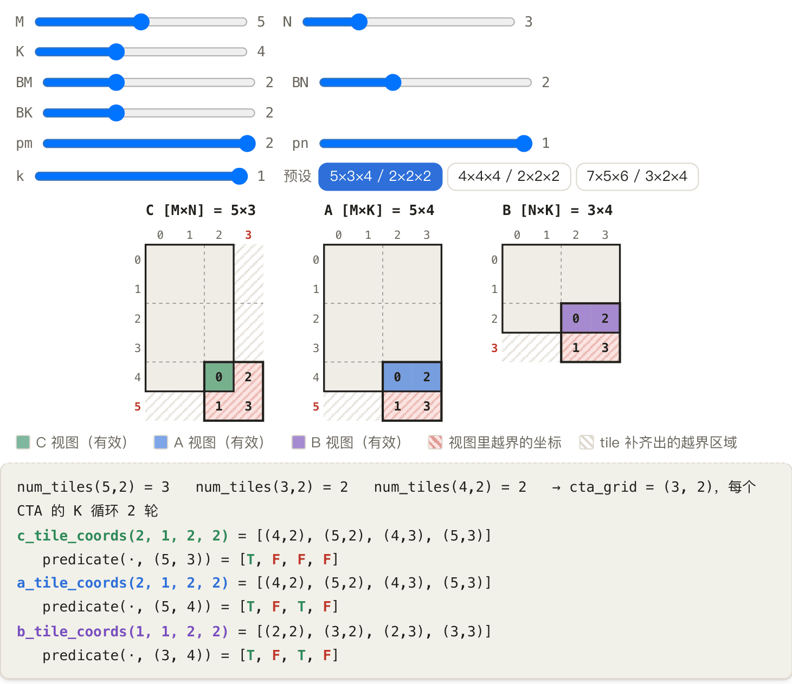
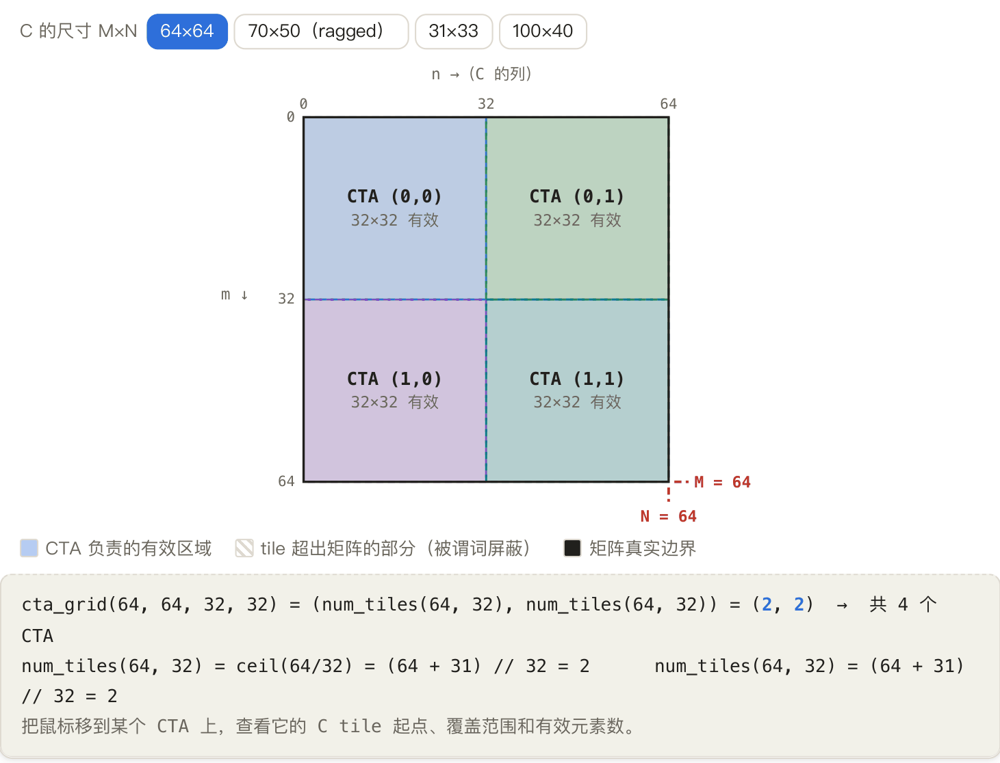
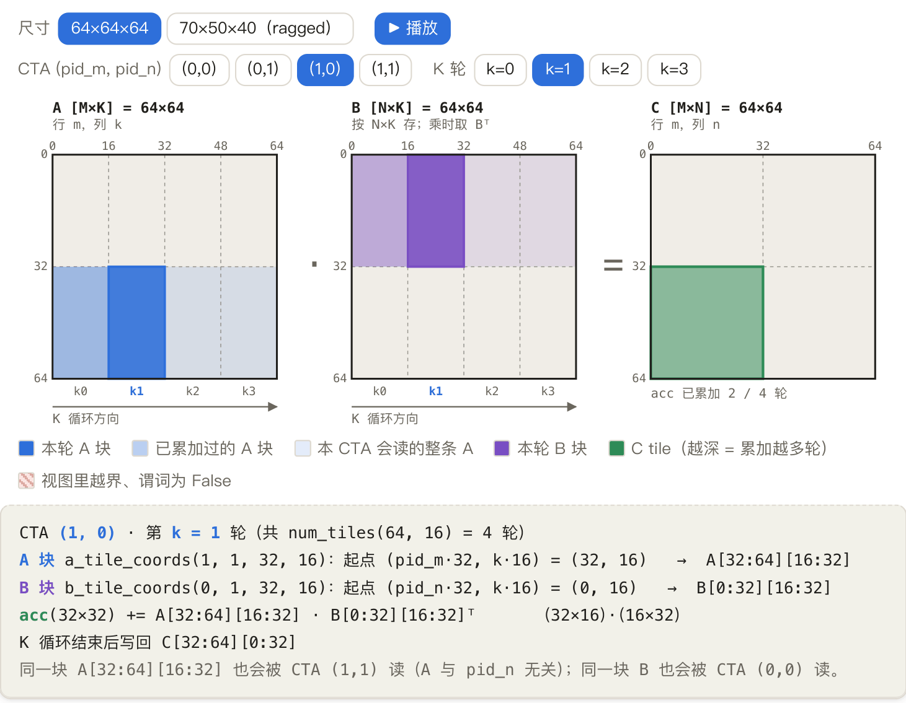
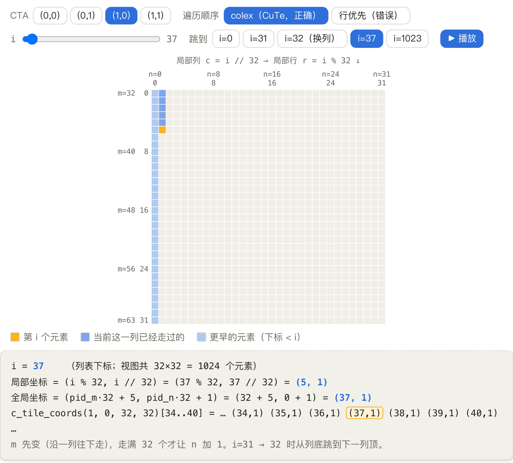
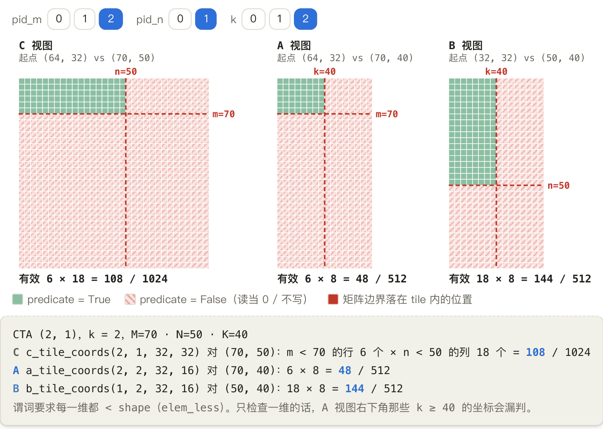
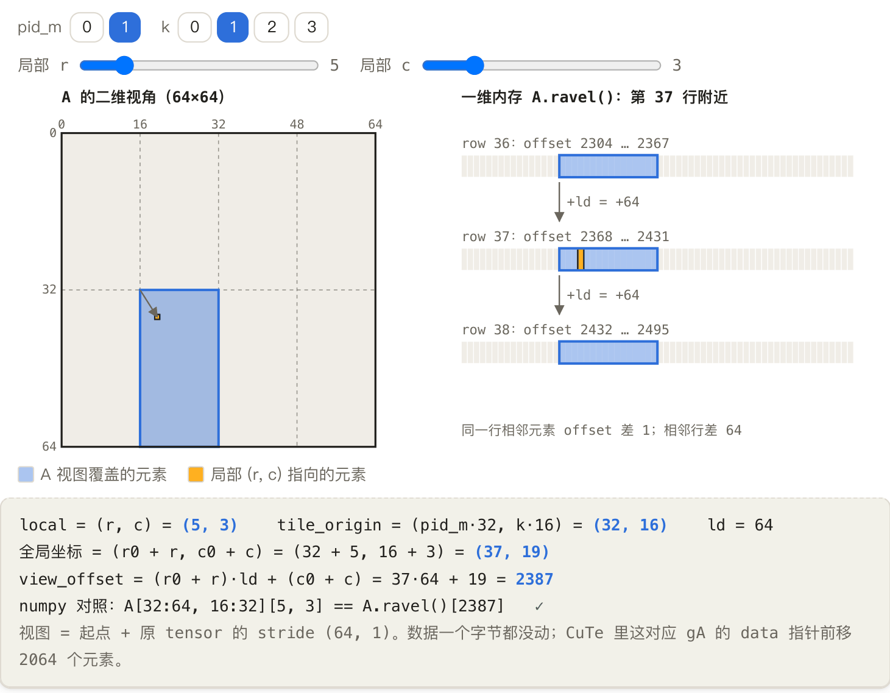
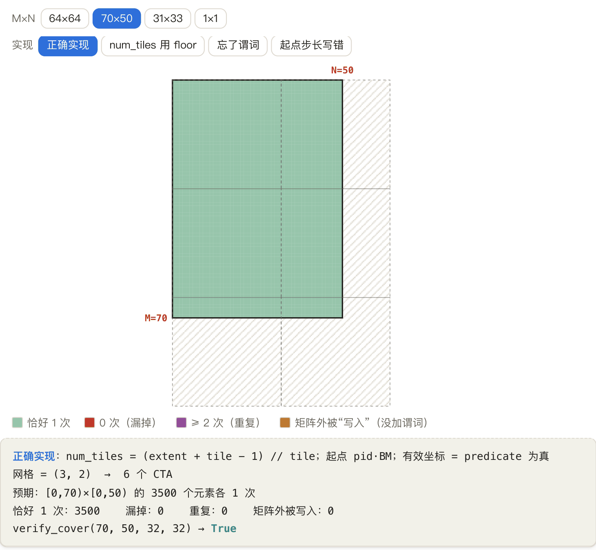

A1 · CTA 切分：C tile、K 循环、local_tile 视图与边界谓词
设计 Tiled GEMM 的第一个问题：每个 CTA 负责 C 的哪一块、每轮 K 循环要拿 A 和 B 的哪一段。本题先忘掉 CuTe 的 API，只用整数运算把四个 CTA、四轮 K 循环、越界的边界块全部推出来，再和真实 CuTe 的 local_tile 逐个坐标对拍。
文件: mine/a1_cta_tiling.py 你的代码 · tests/test_a1_cta_tiling.py 测试 · solutions/a1_cta_tiling.py 参考解
题面速览
- 背景知识：先读 从零设计 的“五个空间映射”。
- 在体系里的位置：真实 kernel 里这一步就是 sgemm_sm80.cu 的三行
local_tile(mA, cta_tiler, cta_coord, Step<...>)。local_tile的定义在 tensor_impl.hpp，带Step投影的版本紧跟其后（带投影的 local_tile）；越界判断用elem_less。 - 你要实现：
num_tiles、cta_grid、c_tile_coords、a_tile_coords、b_tile_coords、predicate、view_offset、verify_cover。IntTuple 的打印 / 解析函数已经给出。 - 关键规则：
- tile 总是完整的 BM×BN（BM×BK），最后一块越界的部分用谓词屏蔽，不缩小 tile。
- 视图里的元素按 colex 顺序（第一维最快）排列，这和 CuTe 对 identity tensor 的逐元素顺序一致。
- A 的视图只依赖
pid_m和k，B 的视图只依赖pid_n和k：B 按 N×K 存储。 local_tile只是视图：局部坐标平移到全局坐标再用原 tensor 的 layout 求偏移，没有拷贝。
验收要点：tile 数向上取整 · 非正参数报错 · 两种规模的 CTA 网格与 K tile 数和 CuTe 相同 · 每个 CTA 的 C 视图坐标与真实 local_tile 逐个相同（含顺序）· 每轮的 A、B 视图坐标与真实 CuTe 相同 · A 视图与 pid_n 无关 · 谓词与 elem_less 相同 · ragged CTA (2,1) 仍有 1024 个坐标、108 个有效 · 视图偏移是纯平移（与真实 CuTe 指针差、numpy 切片都相同）· 各种 M、N 下覆盖恰好一次 · 只用这些坐标拼出的 70×50×40 GEMM 等于 A @ B.T。
- CTA（Cooperative Thread Array）：一个 thread block。一个 CTA 负责输出 C 的一个 tile。
- tile：矩阵里一个连续的矩形子块。BM、BN、BK：CTA tile 在 M、N、K 方向的大小。
- K 循环（K-loop / mainloop）：一个 CTA 沿 K 方向每次处理 BK 个元素，累加到同一个 C tile。
- identity tensor：每个元素的“值”就是它自己的坐标。拿它做
local_tile，就能直接看到视图覆盖了哪些坐标。 - 谓词（predicate）：一个布尔掩码，标记哪些坐标在矩阵内，越界的读写被跳过（或读 0）。
直觉与类比
C 是一面 64×64 的墙，每块瓷砖 32×32，四个工人（CTA）各贴一块。每块瓷砖要用的“原料”是 A 的一条横带和 B 的一条横带，原料一次只运来 16 列宽（BK），运四次。墙的尺寸不是瓷砖的整数倍时（70×50），最后一排瓷砖照样按整块来裁，但只把落在墙内的部分贴上去：这就是谓词。local_tile 相当于给工人一张“只框出他那块墙面的取景框”，墙本身一点没动。
图解：一个 CTA 看到的三块视图
从小例子开始：先在草稿纸上手算
先别管 64×64。拿一个小到可以把每个格子都写出来的例子手算一遍，规律就清楚了，然后再放大到测试里的尺寸，最后写成一般公式。这也是你自己推这道题时应该在草稿纸上画的东西。
① 小：M=5, N=3, K=4，tile 2×2×2
一共 15 个 C 元素，每个坐标都能手写出来。重点看最后一块怎样越界。
grid = (3, 2)，K 循环 2 轮
CTA (2,1)：C 起点 (4, 2)，只有 1 个有效
② 中：64×64×64，tile 32×32×16
这是测试的运行例子，尺寸能整除，没有越界。
grid = (2, 2)，K 循环 4 轮
每个视图 1024 / 512 个坐标
③ ragged：70×50×40
和 ② 用同样的 tile，但尺寸不能整除，最后一块被谓词截掉。
grid = (3, 2)，K 循环 3 轮
CTA (2,1)：108 / 1024 有效
④ 一般把 ①–③ 里反复出现的模式写成公式。
起点 = 块号 × 块大小
第 i 个 = 起点 + (i % R, i // R)
有效 ⇔ 每一维 coord < shape
✎ 草稿纸：M=5, N=3, K=4，BM=BN=BK=2
1) 网格 num_tiles(5,2) = ceil(5/2) = 3 num_tiles(3,2) = 2 num_tiles(4,2)
= 2
→ cta_grid = (3, 2)：6 个 CTA；每个 CTA 的 K 循环 2 轮（k = 0, 1）
2) CTA (2,1) 的 C tile：起点 (2·2, 1·2) = (4, 2)，形状 2×2
i: 0 1 2 3 ← colex：i%2 是行，i//2 是列
局部 (0,0) (1,0) (0,1) (1,1)
全局 (4,2) (5,2) (4,3) (5,3)
<(5,3)? T F F F ← (5,2): 5 不 < 5；(4,3): 3 不 < 3
→ 只有 (4,2) 一个有效。C 只有 5 行 3 列，(4,2) 正是右下角那个元素
3) 第 k=1 轮 A 视图：起点 (pm·2, k·2) = (4, 2)
全局 (4,2) (5,2) (4,3) (5,3) 对 (M,K) = (5,4)： T F T F
第 k=1 轮 B 视图：起点 (pn·2, k·2) = (2, 2)
全局 (2,2) (3,2) (2,3) (3,3) 对 (N,K) = (3,4)： T F T F
4) 覆盖 有效行数按块是 [2, 2, 1]，有效列数按块是 [2, 1]
Σ = (2+2+1) × (2+1) = 15 = 5×3 ✓ 恰好一次
5) 视图偏移 A 是 5×4 行主序（ld = 4）。A 视图起点 (4,2)，局部 (0,1) → 全局 (4,3)
offset = 4·4 + 3 = 19 = A 的最后一个元素 ✓
下面这张图可以任意改小尺寸（M、N、K ≤ 9，tile ≤ 4）。格子里写的是视图下标 i，绿色、蓝色、紫色表示谓词为真，红色斜线表示越界。下方面板直接打印出你的函数应该返回的列表。先用默认的预设对照上面的草稿纸，再自己改参数验证你的推理。

图解详解：分块计算与坐标变化
这些图是交互版讲解页的静态快照，显示的是默认参数下的状态。文中提到的按钮、滑块和悬停提示在这里不能操作；图上的数字和下方的文字、表格、黑底面板说的是同一组值，可以直接对照你的函数输出。
前面的流程图只给了结构。这一节把整道题画成六张可交互的图，每张对应一个或几个要实现的函数。点按钮、拖滑块、把鼠标停在格子上，下方的黑底面板会把当前坐标逐步代入公式算给你看。
先看全局：整道题其实就是下面这段伪代码里的“坐标部分”。测试 test_gemm_from_tiles_equals_numpy 也正是按这段代码拼出完整 GEMM 的。
gm, gn = cta_grid(M, N, BM, BN) # ① 有多少个 CTA（图 1）
for pid_m in range(gm): # GPU 上这两层循环是并行的：每个 (pid_m, p
for pid_n in range(gn):
acc = zeros(BM, BN) # 累加器常驻寄存器，整个 K 循环都在原地累
for k in range(num_tiles(K, BK)): # ② K 循环：在一个 CTA 内串行（图 2）
ca = a_tile_coords(pid_m, k, BM, BK) # A 的 (BM, BK) 视图，colex 顺序（图 3
cb = b_tile_coords(pid_n, k, BN, BK) # B 的 (BN, BK) 视图
a = load(ca, mask=predicate(ca, (M, K))) # 越界的读 0（图 4）
b = load(cb, mask=predicate(cb, (N, K)))
acc += a @ b.T # (BM,BK)·(BK,BN) → (BM,BN)
cc = c_tile_coords(pid_m, pid_n, BM, BN)
store(cc, acc, mask=predicate(cc, (M, N))) # 越界的不写；地址怎么算见 view_offset
# 所有 CTA 的有效写入恰好覆盖 C 每个元素一次：verify_cover（图 6）
图 1 · 把 C 切成 CTA 网格：num_tiles / cta_grid
C 是 M×N 的矩阵，竖直方向是 m（行），水平方向是 n（列）。每个 CTA 拿走一块 32×32 的 C tile。tile 数要向上取整：70 行切 32 行一块，需要 3 块（最后一块只有 6 行在矩阵里）。tile 本身不缩小，超出矩阵的部分（斜线）照样属于 tile，只是之后用谓词屏蔽。

图 2 · 一个 CTA 的 K 循环：A 横条 · B 横条 → C tile
CTA (pid_m, pid_n) 的 C tile 需要 A 的第 pid_m 条横带（BM 行、整个 K），以及 B 的第 pid_n 条横带（BN 行、整个 K）。注意 B 在这里按 N×K 存，所以 B 也是“横带”，乘的时候取转置。K 太长，一次搬不完，于是每轮只取 BK=16 列：第 k 轮取 [16k, 16k+16) 。算出的 32×16 · (32×16)ᵀ = 32×32 部分积，累加到同一个 acc 上。
点“▶ 播放”看 k 从 0 走到最后一轮，再换到下一个 CTA。注意以下三件事：
- 换 k 时，A、B 的深色块向右滑动，C tile 不动、颜色越来越深（累加）。
- 换
pid_n时 A 的横带完全不变，所以a_tile_coords根本没有pid_n参数。B 和pid_m的关系也一样。 - 切到 ragged 后，最后一行 CTA 和最后一轮 k 都有红色斜线：这些坐标照样出现在视图里，只是谓词为 False，读进来当 0。

CuTe 把“所有 k 轮”打包成视图的第三维：gA = local_tile(mA, (32,32,16), (pm,pn,_), Step<_1,X,_1>) 的形状是 (_32,_16,_4) ，layout 是 (_32,_16,_4):(_1@0,_1@1,_16@1) 。读法：沿第一维走一步，坐标第 0 维（m）加 1；沿第二维走一步，坐标第 1 维（k）加 1；沿第三维走一步（下一轮），k 加 16。所以图 2 里“深色块右移 16 列”就是这个 _16@1 。gA(_,_,k) 是第 k 轮那一块，对应你的 a_tile_coords(pm, k, …) 。Step 里的 X 表示丢掉那一维：A 用不到 n，B 用不到 m，C 用不到 k。
源码对照：local_tile 的定义在 tensor_impl.hpp ，带 Step 投影的版本见 带投影的 local_tile ；真实 kernel 里的三行调用在 sgemm_sm80.cu 。
图 3 · 视图内部的元素顺序：colex（第一维最快）
c_tile_coords 返回的是一个有序列表，测试逐项比较，所以顺序必须和 CuTe 一致。CuTe 对一个形状为 (R, S) 的视图做一维索引 t(i) 时，第一维变化最快：i → (i % R, i // R) 。下面先用一个 4×3 的小 tile 看清这个规律：表格里每格写的是这个位置的 i。
局部 (r, c) |
c = 0 |
c = 1 |
c = 2 |
|---|---|---|---|
r = 0 |
0 (0,0) |
4 (0,1) |
8 (0,2) |
r = 1 |
1 (1,0) |
5 (1,1) |
9 (1,2) |
r = 2 |
2 (2,0) |
6 (2,1) |
10 (2,2) |
r = 3 |
3 (3,0) |
7 (3,1) |
11 (3,2) |
i 先沿一列往下数（r = i % 4），数满 4 个才换到下一列（c = i // 4）。这是“列优先 / colex”，和 C 在内存里是不是行主序无关：它只是视图的遍历顺序。下面的图换成真实的 32×32 C tile，拖动 i 或把鼠标停在格子上即可查看。

图 4 · 边界块与谓词：predicate
ragged 例子：M=70、N=50、K=40，网格 3×2，K 循环 3 轮。选一个 CTA 和一轮 k，看它的三个视图里哪些坐标通过 coord[d] < shape[d] （每一维都要满足）。C 视图对 (M, N) 判断，A 视图对 (M, K) 判断，B 视图对 (N, K) 判断。默认选中的就是测试里的 CTA (2,1)、k=2：C 只有 6×18 = 108 个有效。A 视图在 m 和 k 两个方向同时越界，只剩 6×8 = 48 个有效。

| CTA (pm, pn) | C tile 范围 | 有效行 × 有效列 | 有效 / 1024 |
|---|---|---|---|
| (0,0) | m [0,32) · n [0,32) | 32 × 32 | 1024 |
| (0,1) | m [0,32) · n [32,64) | 32 × 18 | 576 |
| (1,0) | m [32,64) · n [0,32) | 32 × 32 | 1024 |
| (1,1) | m [32,64) · n [32,64) | 32 × 18 | 576 |
| (2,0) | m [64,96) · n [0,32) | 6 × 32 | 192 |
| (2,1) | m [64,96) · n [32,64) | 6 × 18 | 108 |
| 合计 | 3500 = 70 × 50 ✓ |
源码对照：CuTe 的逐维比较是 elem_less ；真实 kernel 怎样用 identity tensor 做谓词，见 tiled_copy_if.cu 。
图 5 · 视图不是拷贝：view_offset
local_tile 不搬任何数据。它只记住一个起点 tile_origin ，然后沿用原 tensor 的 stride。局部坐标 (r, c) 先平移成全局坐标 (r0+r, c0+c)，再按原矩阵的行主序（leading dimension = ld = 64）求偏移。右边画的是这个元素所在的行以及上下相邻行在一维内存里的样子：tile 的每一行在内存中是 16 个连续元素，相邻两行之间隔着 ld = 64。

图 6 · verify_cover ：每个元素恰好一次
把所有 CTA 中谓词为真的 C 坐标叠在一起计数，正确的切分应该让 [0,M)×[0,N) 每格恰好是 1。下面除了正确实现，还列了三种常见写错的方式，可以直接看出 verify_cover 会在哪里失败：

速查：全部坐标公式
| 函数 | 视图形状 | 起点 (origin) | 第 i 个元素 | 谓词对照的 shape | 依赖 |
|---|---|---|---|---|---|
c_tile_coords(pm, pn, BM, BN) |
(BM,BN) | (pm·BM,pn·BN) | (pm·BM + i % BM,pn·BN + i // BM) | (M, N) | pm, pn |
a_tile_coords(pm, k, BM, BK) |
(BM,BK) | (pm·BM,k·BK) | (pm·BM + i % BM,k·BK + i // BM) | (M, K) | pm, k（与 pn 无关） |
b_tile_coords(pn, k, BN, BK) |
(BN,BK) | (pn·BN,k·BK) | (pn·BN + i % BN,k·BK + i // BN) | (N, K) | pn, k（与 pm 无关） |
view_offset((r,c), (r0,c0), ld) |
(r0 + r)·ld + (c0 + c)，即“平移 + 原 stride”，没有拷贝 |
三个 tile 函数其实是同一个函数 _tile_coords(r0, c0, R, S) ，只是起点和尺寸不同。抓住“起点 = 块号 × 块大小”和“i → (i % R, i // R)”这两点，这道题就写完了。
逐步演示
cta_grid(64, 64, 32, 32) = (2, 2)：四个 CTA。CuTe 对 local_tile(A, (32,32,16), (pm,pn,_), Step<_1,X,_1>) 给出的视图形状是 (_32,_16,_4)：32 行、16 列、4 个 K tile。
起点 (32, 0)。真实 CuTe 的 gC(0,0) = (32,0)、gC(31,31) = (63,31)。视图第 i 个元素是 (32 + i % 32, i // 32)。
每轮 BK = 16，四轮覆盖 K 的 0..15、16..31、32..47、48..63。数学上 C_tile = Σ_k A[32:64, 16k:16k+16] · B[0:32, 16k:16k+16]ᵀ。
a_tile_coords(1, 1, 32, 16) 的前几项是 (32,16), (33,16), (34,16) …，和 oracle 记录的一致。真实 CuTe 的 gA(0,0,1) = (32,16)、gA(31,15,3) = (63,63)。
70×50×40：网格 (3, 2)，K tile 数 3。CTA (2,1) 的 C 视图仍是完整的 32×32，起点 (64, 32)，但只有行 64..69（6 行）× 列 32..49（18 列）= 108 个坐标在矩阵内，其余 916 个被谓词屏蔽。6行26行×18列14列
易错点
- 最后一块缩小 tile。 CuTe 的视图形状永远是静态的 tile 形状，越界靠谓词。测试
test_ragged_tile_keeps_full_static_shape要求返回完整的 1024 个坐标。 - 把 B 当成 K×N。 运行例子里 B 按 N×K 存，B 视图的第一维是 n。测试
test_a_and_b_tile_coords_match_local_tile。 - 按行主序枚举视图。 视图的元素顺序是 colex（m 最快），和 C 的内存是否行主序无关。测试逐个坐标比较顺序。
- 谓词只看一维。 必须每一维都在范围内（
elem_less）。test_predicate_matches_elem_less的 ragged A 视图里 m 和 k 同时可能越界。 - 以为 local_tile 拷贝了数据。
view_offset只是平移；test_view_offset_matches_numpy_slicing用 numpy 切片对照，test_view_offset_is_pure_translation用真实 CuTe 的指针差对照。
对照文档
“以 CTA (0,0) 为例，它需要 A 的前 32 行和 B 的前 32 行，但 K=64 不必一次搬完。每轮处理 K 的 16 个元素……因此自然出现第一个需求：从全局 tensor 中，按 CTA 坐标取出当前 tile。CuTe 的 local_tile 负责构造这个局部视图……注意：local_tile 只确定当前 CTA 观察哪一块数据；它本身不决定每个线程搬什么，也不等于已经执行了内存 copy。”
本题把这段话里的每一个数都算了出来，并补上文档没有展开的边界块：tile 不变，谓词屏蔽。
上机验证
playground/run.sh playground/a1_cta_tiling.cpp # 真实 CuTe，本机编译运行
./check.sh oracle a1 # 重新生成 tests/golden/a1_cta_tiling.json
本机的真实输出（节选）：
CTA (2,1): live 108 / 1024
gC(0) = (64,32) gC(last) = (95,63)
gA(pid_m=1, all k): (_32,_16,3):(_1@0,_1@1,_16@1)
view of CTA (0,1) on row-major 64x64: offset(0,0)=32 offset(1,0)=96
(_32,_16,3):(_1@0,_1@1,_16@1) 读作：第一维 stride 是“坐标第 0 维加 1”，第二维是“坐标第 1 维加 1”，第三维（K tile）是“坐标第 1 维加 16”。这正是“第 k 轮从第 16k 列开始”。3 前面没有下划线，因为 K = 40 是运行时值，K tile 数只能在运行时算出。
三级提示
L1I/O 例子和关键问题方向（轻度剧透）
num_tiles(70, 32) # 3
cta_grid(70, 50, 32, 32) # (3, 2)
c_tile_coords(1, 0, 32, 32)[:3] # [(32, 0), (33, 0), (34, 0)]
a_tile_coords(1, 1, 32, 16)[:2] # [(32, 16), (33, 16)]
sum(predicate(c_tile_coords(2, 1, 32, 32), (70, 50))) # 108
view_offset((1, 0), (0, 32), 64) # 96
关键问题
- CTA (pm, pn) 的 C tile 起点是什么？A 视图和 B 视图分别依赖哪些坐标？
- 为什么 CuTe 的边界块不缩小 tile，而是加谓词？对编译期优化有什么好处？
- 视图的第 i 个元素对应哪个局部坐标？为什么是 colex？
L2思路拆解与常见坑拆解与常见坑（中度剧透）
num_tiles：先检查正数，再(extent + tile − 1) // tile。- 写一个辅助函数：给定起点
(r0, c0)和 tile 形状(R, S)，返回[(r0 + i % R, c0 + i // R) for i in range(R·S)]。三个视图函数都调用它。 predicate：逐维比较coord[d] < shape[d]，全部成立才为真。view_offset：(origin_r + r)·ld + origin_c + c，不要先拷贝一块再求偏移。verify_cover：遍历所有 CTA，把有效坐标放进计数字典，最后检查个数和每个计数都等于 1。
L3关键问题的答案几乎是答案（重度剧透）
答案
- 起点
(pm·BM, pn·BN)。A 视图依赖 pm 和 k（从(pm·BM, k·BK)起），B 视图依赖 pn 和 k（从(pn·BN, k·BK)起），C 视图依赖 pm 和 pn。 - tile 形状是编译期常量，所有循环上界、寄存器数、指令序列都能在编译期确定；越界只影响少数边界 CTA，用谓词处理比让每个 CTA 带一个动态形状便宜得多。
- 第 i 个元素是
(i % R, i // R)。CuTe 所有多维坐标都按 colex 线性化（最左边的模式变化最快），这是代数定义的约定，不代表内存连续方向；内存连续方向由 stride 决定。
参考解
✓solutions/a1_cta_tiling.py先自己写完、跑过测试再看
"""A1 · CTA 切分：C tile、K 循环、local_tile 视图与边界谓词 — reference solution.
从零设计 Tiled GEMM 的第一个问题：**每个 CTA（Cooperative Thread Array，线程块）负责矩阵的哪一块？**
本题不用任何 CuTe API，只用整数运算把答案推出来；期望值来自 oracle/a1_cta_tiling.cpp：它对identity tensor（每个元素的值就是自己的坐标）调用真实 CuTe 的 local_tile，写出每个 CTA 视图覆盖的坐标。
运行例子（全部练习通用）
- A[M,K]、B[N,K]（两者都是 K 连续）、C[M,N] = A · Bᵀ；M = N = K = 64。
- CTA tile：BM = BN = 32，BK = 16 → 2×2 = 4 个 CTA，每个 CTA 的 K 循环 4 轮。
- 边界例子：M = 70、N = 50、K = 40（不是 tile 的整数倍），同样的 tile 大小。
规则
- num_tiles(extent, tile) = ceil(extent / tile)；extent、tile 必须为正整数，否则 ValueError。
- cta_grid(M, N, BM, BN) = (num_tiles(M, BM), num_tiles(N, BN))。
- 一个 CTA (pid_m, pid_n) 的 C tile 起点是 (pid_m·BM, pid_n·BN)。tile 一律按**完整的**BM×BN 计算，
越界的部分用谓词屏蔽，而不是缩小 tile（这和 CuTe local_tile 的行为一致：视图形状总是静态的 tile 形状）。
- k_tile 号 k（0 ≤ k < num_tiles(K, BK)）覆盖 K 方向 [k·BK, (k+1)·BK)。
- 视图坐标顺序：一个 (R, S) 的 tile 视图，元素 i 是局部坐标 (i % R, i // R)，即 colex（第一维最快）。
- c_tile_coords(pid_m, pid_n, BM, BN) -> [(m, n), ...] 长度 BM·BN，m =pid_m·BM + i % BM，n = pid_n·BN + i // BM
- a_tile_coords(pid_m, k, BM, BK) -> [(m, kk), ...] A 的 (BM, BK)视图：m 来自 pid_m，kk 来自 k_tile
- b_tile_coords(pid_n, k, BN, BK) -> [(n, kk), ...] B 的 (BN, BK)视图：n 来自 pid_n（B 按 N×K 存）
- 坐标可以越界（ragged 的最后一块）；越界由 predicate 判断。
- predicate(coords, shape) -> [bool, ...]：coord[d] < shape[d] 对每一维都成立才为 True（CuTe 的 elem_less）。
- view_offset(local, tile_origin, ld)：local_tile 只是**视图**——局部坐标 (r, c) 对应的
全局内存偏移是
(origin_r + r)·ld + origin_c + c（行主序、leading dimension = ld），没有任何拷贝。
- verify_cover(M, N, BM, BN) -> bool：所有 CTA 的 C tile 里“谓词为真”的坐标恰好覆盖 [0,M)×[0,N) 每个元素一次。
API
is_tuple, flatten, fmt_tuple, fmt_layout, parse_tuple, parse_layout given（tools/cute_given.py）
num_tiles(extent, tile) -> int
cta_grid(M, N, BM, BN) -> (int, int)
c_tile_coords(pid_m, pid_n, BM, BN) -> list[tuple[int, int]]
a_tile_coords(pid_m, k, BM, BK) -> list[tuple[int, int]]
b_tile_coords(pid_n, k, BN, BK) -> list[tuple[int, int]]
predicate(coords, shape) -> list[bool]
view_offset(local, tile_origin, ld) -> int
verify_cover(M, N, BM, BN) -> bool
"""
from __future__ import annotations
def is_tuple(x) -> bool:
return isinstance(x, tuple)
def flatten(t) -> tuple:
"""(2, (3, 4)) -> (2, 3, 4); 5 -> (5,)."""
if not is_tuple(t):
return (t,)
out = ()
for e in t:
out += flatten(e)
return out
def fmt_tuple(t, static: bool = True) -> str:
"""Format an IntTuple the way cute::print does: (_2,(_3,_4)) for static ints."""
if is_tuple(t):
return "(" + ",".join(fmt_tuple(e, static) for e in t) + ")"
return ("_" if static else "") + str(t)
def fmt_layout(shape, stride, static: bool = True) -> str:
"""cute::print of a Layout: "<shape>:<stride>"."""
return fmt_tuple(shape, static) + ":" + fmt_tuple(stride, static)
def parse_tuple(s: str):
"""Inverse of fmt_tuple. Accepts '_4' or '4'. '(_2,(_3,_4))' -> (2, (3, 4))."""
s = s.strip()
pos = 0
def parse():
nonlocal pos
if s[pos] == "(":
pos += 1
items = []
while s[pos] != ")":
items.append(parse())
if s[pos] == ",":
pos += 1
pos += 1
return tuple(items)
start = pos
while pos < len(s) and s[pos] not in ",)":
pos += 1
tok = s[start:pos].lstrip("_")
return int(tok)
v = parse()
if pos != len(s):
raise ValueError(f"trailing characters in {s!r}")
return v
def parse_layout(s: str):
"""'(_4,_8):(_8,_1)' -> ((4, 8), (8, 1)). A swizzled/composed layout is not accepted."""
shape_s, stride_s = _split_top_colon(s.strip())
return parse_tuple(shape_s), parse_tuple(stride_s)
def _split_top_colon(s: str):
depth = 0
for i, ch in enumerate(s):
if ch == "(":
depth += 1
elif ch == ")":
depth -= 1
elif ch == ":" and depth == 0:
return s[:i], s[i + 1:]
raise ValueError(f"no top-level ':' in {s!r}")
# ---- A1: your code ----
def num_tiles(extent: int, tile: int) -> int:
"""ceil(extent / tile)；extent、tile 必须是正整数，否则 ValueError。"""
if extent <= 0 or tile <= 0:
raise ValueError("extent and tile must be positive")
# 向上取整：最后一块可能只有一部分在矩阵内，用谓词屏蔽。
return (extent + tile - 1) // tile
def cta_grid(M: int, N: int, BM: int, BN: int) -> tuple:
"""(num_tiles(M, BM), num_tiles(N, BN))：CTA 网格的形状。"""
return num_tiles(M, BM), num_tiles(N, BN)
def _tile_coords(r0: int, c0: int, R: int, S: int) -> list:
# colex 顺序：第一维变化最快。CuTe 的 identity tensor 视图正是这个顺序（oracle 逐元素打印）。
return [(r0 + i % R, c0 + i // R) for i in range(R * S)]
def c_tile_coords(pid_m: int, pid_n: int, BM: int, BN: int) -> list:
"""CTA (pid_m, pid_n) 的 C 视图覆盖的全局坐标，colex 顺序，长度 BM·BN。"""
return _tile_coords(pid_m * BM, pid_n * BN, BM, BN)
def a_tile_coords(pid_m: int, k: int, BM: int, BK: int) -> list:
"""A 的 (BM, BK) 视图：行由 pid_m 决定，列由第 k 个 K tile 决定。"""
# A 的视图只依赖 pid_m 和 k，不依赖 pid_n：同一行的两个 CTA 读同一块 A（数据复用发生在 L2）。
return _tile_coords(pid_m * BM, k * BK, BM, BK)
def b_tile_coords(pid_n: int, k: int, BN: int, BK: int) -> list:
"""B 的 (BN, BK) 视图：B 按 N×K 存储，行由 pid_n 决定。"""
return _tile_coords(pid_n * BN, k * BK, BN, BK)
def predicate(coords, shape) -> list:
"""每个坐标是否在 shape 之内（逐维 <）。"""
return [all(c < s for c, s in zip(coord, shape)) for coord in coords]
def view_offset(local, tile_origin, ld: int) -> int:
"""视图里局部坐标 local=(r, c) 对应的全局行主序偏移：(origin_r + r)·ld + origin_c + c。"""
r, c = local
r0, c0 = tile_origin
# local_tile 不搬数据：它只是把“局部坐标”平移成“全局坐标”，再用原 tensor 的 layout 求偏移。
return (r0 + r) * ld + (c0 + c)
def verify_cover(M: int, N: int, BM: int, BN: int) -> bool:
"""有效（谓词为真）的 C 坐标恰好覆盖 [0,M)×[0,N) 每个元素一次。"""
gm, gn = cta_grid(M, N, BM, BN)
seen = {}
for pm in range(gm):
for pn in range(gn):
cs = c_tile_coords(pm, pn, BM, BN)
for c, ok in zip(cs, predicate(cs, (M, N))):
if ok:
seen[c] = seen.get(c, 0) + 1
return len(seen) == M * N and all(v == 1 for v in seen.values())面试官追问 & 对照源码
local_tile(A, tiler, (pm, pn, _), Step<_1,X,_1>{})里的X起什么作用？去掉Step会得到什么形状？（对照 带投影的 local_tile 里的注释例子。）- 真实 kernel 怎样处理越界？对照 tiled_copy_if.cu：它用 identity tensor 的 partition 做谓词，和本题的做法相同。
- 同一行的两个 CTA 读同一块 A：如果把 CTA 的执行顺序换成“先列后行”（swizzled rasterization），L2 命中率会怎样变化？
- 70×50 的例子里有多少比例的线程在做无用功？如果 M 远大于 BM，这个比例怎么变？